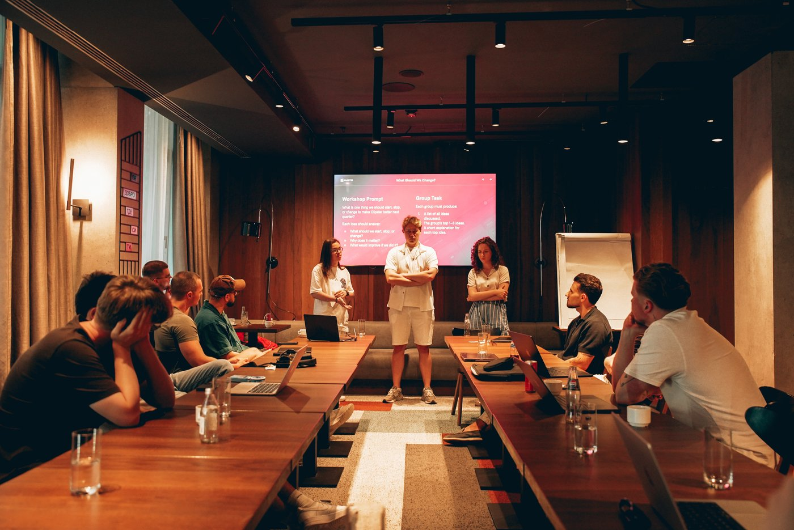
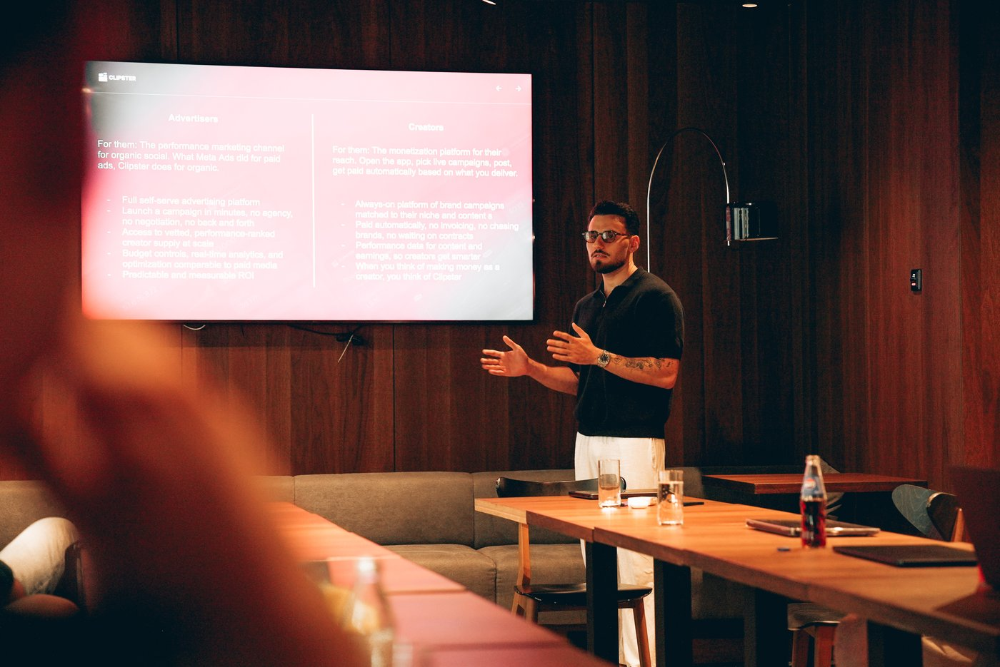
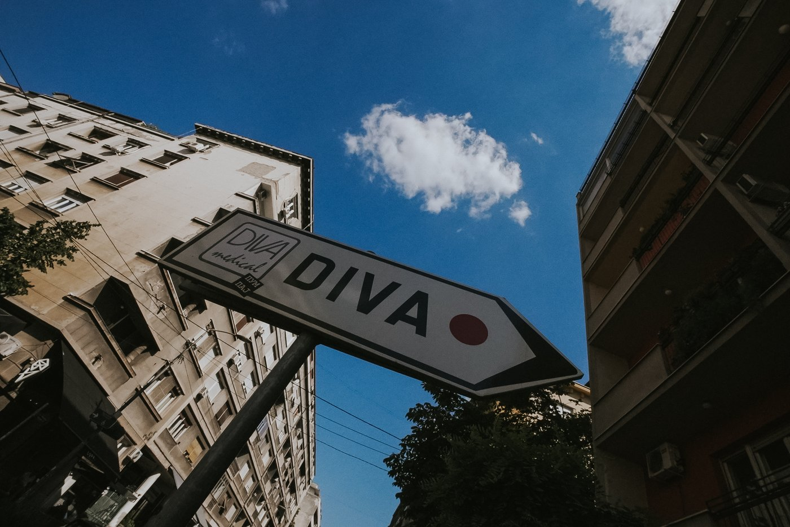
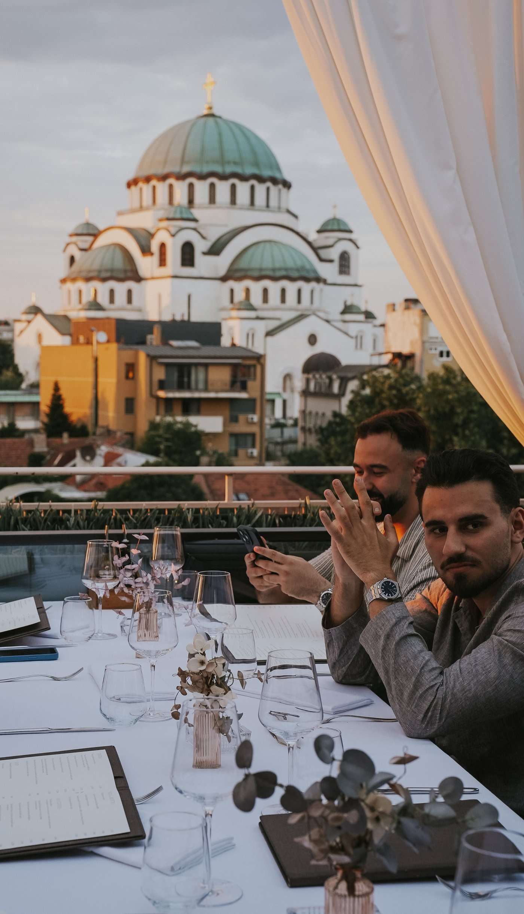
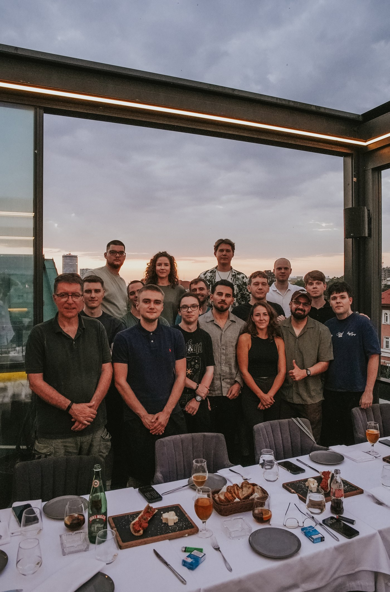
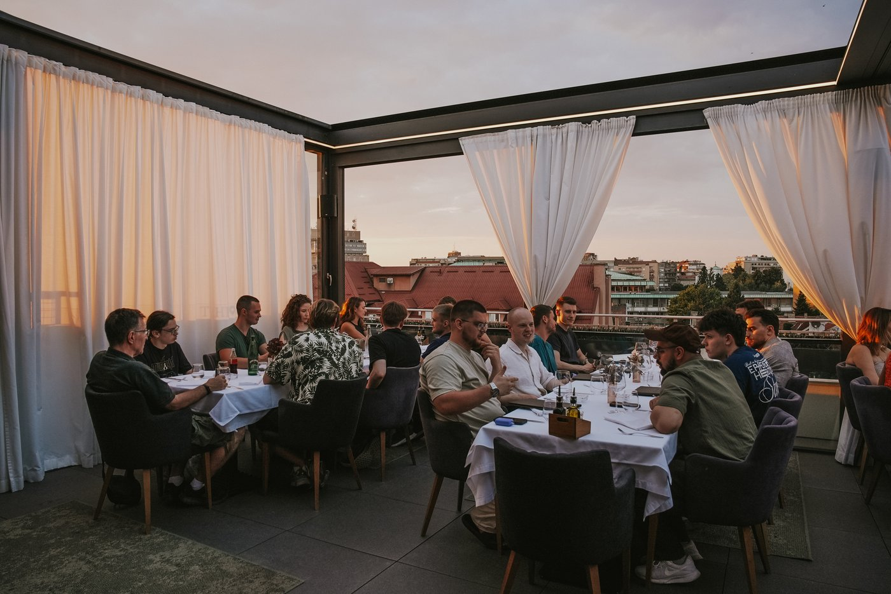

(Case 05) Kunde · Clipster
Clipster — OFFSIDE
Eventproduktion vor Ort und Behind-the-Scenes-Content für unseren Kunden Clipster beim OFFSIDE in Belgrad, Serbien.

Die Aufgabe
Ein Firmen-Offsite so einfangen, wie das Team es wirklich erlebt hat — die Sessions, die Stadt und die Abende.
Was wir gemacht haben
- Eventbegleitung vor Ort
- Workshops und Vorträge
- Team- und Stadt-Content
- Behind-the-Scenes-Schnitte





Du planst etwas in der Art?
Projekt starten →